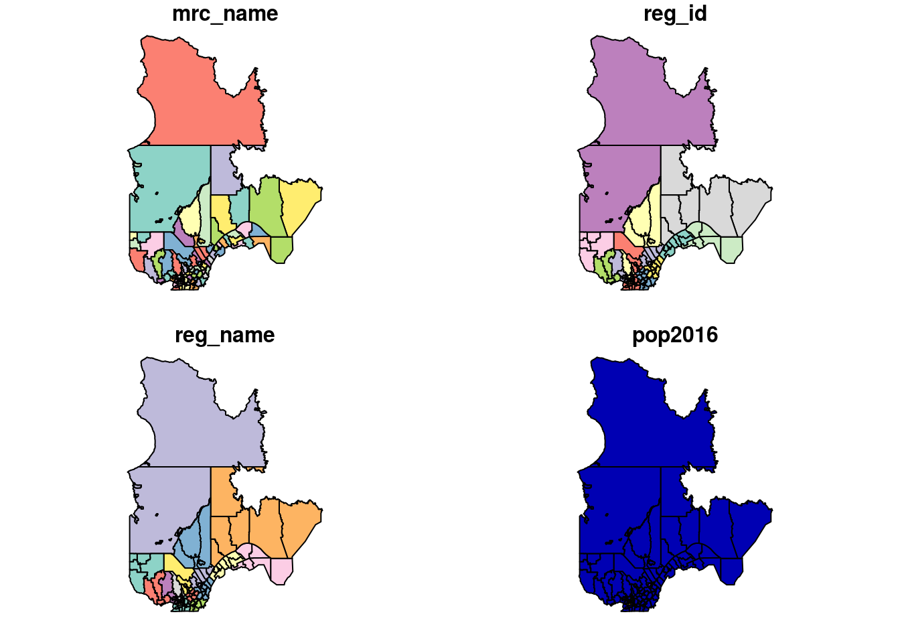
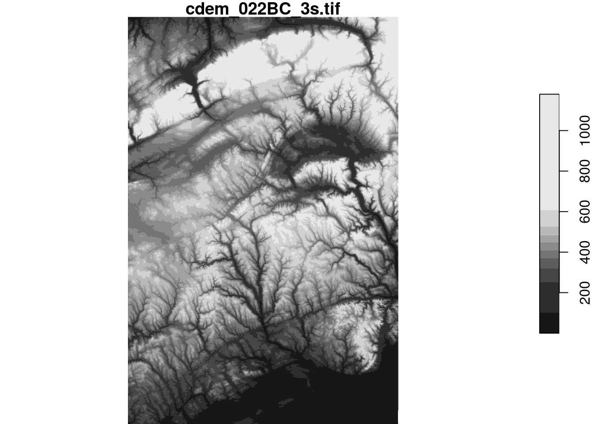

Introduction au traitement des données géospatiales avec R
Philippe Marchand, Université du Québec en Abitibi-Témiscamingue
7 mai 2020
Cet atelier se veut un survol des outils disponibles en R pour l’analyse de données géoréférencées. Ce type de données apparaît de plus en plus fréquemment dans divers domaines (ex.: photos aériennes, images satellite, données du recensement, lieux rattachés aux messages sur les réseaux sociaux, etc.). Il existe deux grandes catégories de données géoréférencées:
- les données matricielles représentent des variables définies à chaque point d’une grille couvrant tout l’espace représenté (comme une image satellite);
- les données vectorielles associent des variables à des objets géométriques placés à des endroits précis (comme la position des villes et des chemins sur une carte routière).
Au départ, l’utilisation de commandes de programmation pour manipuler des données géographiques peut sembler moins intuitive que l’interface graphique de logiciels spécialisés (ex.: ArcGIS). Voici quelques avantages d’une analyse programmée:
- Il est facile de répéter l’analyse pour de nouvelles données en ré-exécutant le programme.
- Il est facile pour d’autres chercheurs de reproduire la méthodologie s’ils ont accès au même langage de programmation.
- Dans le cas spécifique de R, on peut extraire des variables spatiales et les combiner à d’autres analyses statistiques avec un seul programme.
Objectifs
- Se familiariser avec des packages R permettant le traitement et la visualisation simple de données vectorielles (sf) et matricielles (stars).
- Effectuer des transformations de données courantes à l’aide des fonctions de ces packages.
- Connaître certains packages permettant des visualisations plus complexes: ggplot2 pour des cartes statiques et mapview pour des cartes interactives.
Note sur les packages
L’ensemble des packages disponibles pour l’analyse spatiale en R évolue rapidement. Il y a quelques années, les packages sp and raster étaient les principaux outils pour l’analyse des données vectorielles et matricielles, respectivement. sf et stars font partie d’une initiative récente pour faciliter le traitement des données spatiales dans R (https://www.r-spatial.org/).
Le package sf représente les tableaux de données spatiaux selon un format standard basé sur les bases de données géospatiales et s’intègre bien avec des packages populaires pour la manipulation et la visualisation des données (notamment dplyr et ggplot2).
Le package stars est aussi compatible avec ggplot2 et représente bien les “cubes” de données avec des dimensions supplémentaires aux deux dimensions spatiales, comme le temps.
Le package raster et son successeur terra (lancé en 2020) contiennent certaines fonctionnalités supplémentaires relatives à stars et réalisent certaines opérations plus rapidement. Ainsi, il peut être utile d’apprendre à les utiliser si vous devez réaliser des opérations complexes sur des données matricielles massives; voir la documentation sur https://rspatial.org/ pour plus de détails.
Table des matières
- Explorer un jeu de données vectoriel
- Systèmes de coordonnées et transformations
- Cartes détaillées avec ggplot2
- Opérations géométriques sur les données vectorielles
- Traitement des données matricielles
- Cartes interactives avec mapview
- Références supplémentaires
- Sources des données
- Solutions des exercices
Explorer un jeu de données vectoriel
Tous les jeux de données de cet atelier se trouvent dans le répertoire data. Le jeu de données mrc contient les coordonnées des municipalités régionales de comté (MRC) du Québec en format ESRI shapefile. Notez que l’information pour chaque jeu de données est contenue dans plusieurs fichiers, qui portent le même nom mais diffèrent par leur extension (mrc.dbf, mrc.prj, mrc.shp and mrc.shx).
Pour charger ce jeu de données dans R, nous appelons la fonction st_read (toutes les fonctions du package sf ont le préfixe st_, pour spatiotemporel) en spécifiant le chemin vers le fichier .shp.
library(sf)
mrc <- st_read("data/mrc.shp")## Reading layer `mrc' from data source `Z:\cours\atelier_rgeo\data\mrc.shp' using driver `ESRI Shapefile'
## Simple feature collection with 104 features and 4 fields
## geometry type: MULTIPOLYGON
## dimension: XY
## bbox: xmin: -79.7625 ymin: 44.99136 xmax: -56.93495 ymax: 62.58217
## CRS: 4269Le texte de sortie indique certaines propriétés du jeu de données chargé, incluant le type de géométrie (MULTIPOLYGON), les limites spatiales du jeu de données (bbox) et le système de coordonnées (CRS) utilisé.
Les limites spatiales et une description détaillée du système de coordonnées peuvent être extraits séparément à l’aide des fonctions st_bbox et st_crs:
st_bbox(mrc)## xmin ymin xmax ymax
## -79.76250 44.99136 -56.93495 62.58217st_crs(mrc)## Coordinate Reference System:
## User input: 4269
## wkt:
## GEOGCS["GCS_North_American_1983",
## DATUM["North_American_Datum_1983",
## SPHEROID["GRS_1980",6378137,298.257222101]],
## PRIMEM["Greenwich",0],
## UNIT["Degree",0.017453292519943295],
## AUTHORITY["EPSG","4269"]]Nous discuterons des systèmes de coordonnées dans la prochaine section. Notons pour l’instant que “Degree” dans le bloc “UNIT” indique qu’il s’agit de coordonnées de longitude et latitude exprimées en degrés décimaux.
Regardons un aperçu du jeu de données:
class(mrc)## [1] "sf" "data.frame"head(mrc)## Simple feature collection with 6 features and 4 fields
## geometry type: MULTIPOLYGON
## dimension: XY
## bbox: xmin: -79.51776 ymin: 45.44911 xmax: -63.31941 ymax: 62.58217
## CRS: 4269
## mrc_name reg_id reg_name pop2016
## 1 Abitibi 08 Abitibi-Temiscamingue 24707
## 2 Abitibi-Ouest 08 Abitibi-Temiscamingue 20582
## 3 Acton 16 Monteregie 15623
## 4 Administration regionale Kativik 10 Nord-du-Quebec 13343
## 5 Antoine-Labelle 15 Laurentides 35410
## 6 Argenteuil 15 Laurentides 32477
## geometry
## 1 MULTIPOLYGON (((-78.64359 4...
## 2 MULTIPOLYGON (((-79.51776 4...
## 3 MULTIPOLYGON (((-72.70415 4...
## 4 MULTIPOLYGON (((-77.82293 5...
## 5 MULTIPOLYGON (((-75.52133 4...
## 6 MULTIPOLYGON (((-74.71004 4...Un objet de classe sf est en fait un data.frame spécialisé, où chaque ligne contient des champs de données qui sont associés à un élément géométrique, décrit dans la colonne geometry. Les types géométriques les plus courants sont:
- POINT: Coordonnées (x, y) d’un point.
- LINESTRING: Séquence de points reliés par des segments de droite.
- POLYGON: Séquence de points formant un polygone simple fermé.
- MULTIPOINT, MULTILINESTRING ou MULTIPOLYGON: Jeu de données où chaque élément peut être composé de plusieurs points ou lignes ou polygones.
La fonction plot appliquée à un objet sf crée une carte de chaque attribut du jeu de données.
plot(mrc)
Pour n’afficher qu’un attribut, il faut sélectionner la colonne correspondante. Pour n’afficher que la carte sans données, on peut choisir la colonne geometry. Le paramètre axes = TRUE indique au programme d’afficher les axes de coordonnées.
plot(mrc[, "geometry"], axes = TRUE)
Vous pouvez choisir une partie des rangées ou des colonnes d’un objet sf comme s’il s’agissait d’un data.frame régulier.
# Choisir la 5e rangée
mrc[5, ]## Simple feature collection with 1 feature and 4 fields
## geometry type: MULTIPOLYGON
## dimension: XY
## bbox: xmin: -76.14932 ymin: 45.95376 xmax: -74.34359 ymax: 47.76333
## CRS: 4269
## mrc_name reg_id reg_name pop2016 geometry
## 5 Antoine-Labelle 15 Laurentides 35410 MULTIPOLYGON (((-75.52133 4...# Choisir le nom et la population de la MRC pour les MRC avec une population de 200 000 et plus
mrc[mrc$pop2016 > 200000, c("mrc_name", "pop2016")] ## Simple feature collection with 5 features and 2 fields
## geometry type: MULTIPOLYGON
## dimension: XY
## bbox: xmin: -75.90834 ymin: 45.37075 xmax: -71.13162 ymax: 46.98186
## CRS: 4269
## mrc_name pop2016 geometry
## 23 Gatineau 278198 MULTIPOLYGON (((-75.89532 4...
## 47 Laval 425225 MULTIPOLYGON (((-73.74488 4...
## 69 Longueuil 417497 MULTIPOLYGON (((-73.44474 4...
## 82 Montreal 1959836 MULTIPOLYGON (((-73.49801 4...
## 89 Quebec 572755 MULTIPOLYGON (((-71.55293 4...Notez que la colonne contenant l’information spatiale (geometry) demeure toujours dans le tableau, même si elle n’est pas choisie. Pour éliminer cette colonne et convertir l’objet sf en tableau de données régulier, vous pouvez utiliser la fonction st_drop_geometry.
Exercice 1
Choisissez les MRC de la région du Bas-St-Laurent (reg_id: 01) et de la Gaspésie (reg_id: 11), puis affichez leur population de 2016 sur une carte. Indice: L’opérateur %in% permet de vérifier si une variable prend une valeur parmi une liste. Par exemple, x %in% c(1, 3) est égal à TRUE si x = 1 ou x = 3.
Intégration avec le package dplyr
Les fonctions de manipulation de données du package dplyr fonctionnent aussi sur des objets sf. Par exemple, nous pouvons réécrire l’exemple ci-dessus (choisir le nom et la population des MRC avec une population de plus de 200 000) avec filter et select.
library(dplyr)
filter(mrc, pop2016 > 200000) %>%
select(mrc_name, pop2016)## Simple feature collection with 5 features and 2 fields
## geometry type: MULTIPOLYGON
## dimension: XY
## bbox: xmin: -75.90834 ymin: 45.37075 xmax: -71.13162 ymax: 46.98186
## CRS: 4269
## mrc_name pop2016 geometry
## 1 Gatineau 278198 MULTIPOLYGON (((-75.89532 4...
## 2 Laval 425225 MULTIPOLYGON (((-73.74488 4...
## 3 Longueuil 417497 MULTIPOLYGON (((-73.44474 4...
## 4 Montreal 1959836 MULTIPOLYGON (((-73.49801 4...
## 5 Quebec 572755 MULTIPOLYGON (((-71.55293 4...Lorsque nous calculons une statistique sommaire par groupe, les éléments géométriques sont aussi soudés pour chaque groupe. Pour illustrer ce point, regroupons les MRC et leur population par région.
regions <- group_by(mrc, reg_name) %>%
summarize(pop2016 = sum(pop2016))
head(regions)## Simple feature collection with 6 features and 2 fields
## geometry type: GEOMETRY
## dimension: XY
## bbox: xmin: -79.57933 ymin: 45.58943 xmax: -56.93495 ymax: 55.00006
## CRS: 4269
## # A tibble: 6 x 3
## reg_name pop2016 geometry
## <chr> <dbl> <GEOMETRY [°]>
## 1 Abitibi-Temisca~ 147282 POLYGON ((-77.93147 47.27012, -77.93155 47.26624, -7~
## 2 Bas-Saint-Laure~ 197806 POLYGON ((-68.38319 47.88014, -68.38314 47.83307, -6~
## 3 Capitale-Nation~ 733898 POLYGON ((-70.69151 47.03311, -70.69453 47.02324, -7~
## 4 Centre-du-Quebec 243354 POLYGON ((-72.09283 45.79699, -72.11938 45.77338, -7~
## 5 Chaudiere-Appal~ 421993 POLYGON ((-70.2784 46.05675, -70.2784 46.05608, -70.~
## 6 Cote-Nord 92712 MULTIPOLYGON (((-66.25978 55.00001, -66.25001 55, -6~plot(regions["pop2016"])Créer un objet spatial à partir d’un data frame
Le fichier plots.csv contient des données sur les placettes d’inventaire du Ministère des Forêts, de la Faune et des Parcs du Québec (MFFP), incluant le numéro d’identification, la latitude et la longitude, la date d’inventaire, le type de couvert (feuillu, mixte ou confière) ainsi que la classe de hauteur.
plots <- read.csv("data/plots.csv")
head(plots)## plot_id lat long surv_date cover_type height_cls
## 1 99100101 45.35944 -72.89580 2012-11-12 Deciduous 17-22 m
## 2 99100102 45.36267 -72.89244 2012-09-08 Deciduous >22 m
## 3 99100201 45.49196 -71.16727 2008-09-11 Deciduous 17-22 m
## 4 99100202 45.49068 -71.16180 2008-09-11 Deciduous 17-22 m
## 5 99100301 45.47711 -72.58792 2012-08-30 Deciduous >22 m
## 6 99100302 45.47969 -72.58448 2012-08-30 Deciduous >22 mNous pouvons convertir ces données en objet sf avec la fonction st_as_sf. L’argument coords indique quelles colonnes contiennent les coordonnées X et Y, tandis que crs spécifie le système de coordonnées utilisé.
plots <- st_as_sf(plots, coords = c("long", "lat"), crs = st_crs(mrc))
plot(plots["geometry"])
Rappel
- Les données spatiales vectorielles associent des champs de donnés à des objets géométriques tels que des points, lignes et polygones. Le package sf permet de travailler avec ces données dans R.
- Pour lire un jeu de données vectoriel:
st_read. - Pour convertir un jeu de données standard (
data.frame) en objet spatial:st_as_sf. - Toutes les opérations de base des objets
data.frame, ainsi que les fonctions du package dplyr, s’appliquent aussi aux objetssf. - La fonction
plotappliquée à un objetsfpermet d’afficher un ou plusieurs champs de données sur une carte.
Systèmes de coordonnées et transformations
Jusqu’à présent, nous avons travaillé avec des données utilisant un système de coordonnées géographiques, où les positions sont exprimées en degrés de longitude et latitude. Ces coordonnées sont basées sur un modèle qui approxime la surface irrégulière du niveau moyen de la mer autour de la Terre (appelée géoïde) par une ellipsoïde (une sphère légèrement aplatie). Ce modèle géodésique est le datum dans la description du système de coordonnées: les coordonnées de mrc sont définies avec le système NAD83 (Amérique du Nord), tandis que plusieurs cartes à l’échelle mondiale sont basées sur le système WGS84.
st_crs(mrc)## Coordinate Reference System:
## User input: 4269
## wkt:
## GEOGCS["GCS_North_American_1983",
## DATUM["North_American_Datum_1983",
## SPHEROID["GRS_1980",6378137,298.257222101]],
## PRIMEM["Greenwich",0],
## UNIT["Degree",0.017453292519943295],
## AUTHORITY["EPSG","4269"]]Une projection convertit les coordonnées géographiques en coordonnées planes (X, Y). Puisqu’il est impossible de représenter fidèlement la surface entière du globe sur un plan, des projections spécialisées ont été développées en fonction de la région du monde et des besoins précis.
Par exemple, les images ci-dessous montrent comment des aires circulaires identiques à différents points du globe apparaissent sur une projection de Mercator (formes comparables) et sur une projection équivalente de Lambert (aires comparables).


Nous allons convertir les polygones mrc dans une projection conique conforme de Lambert centrée sur le Québec (code EPSG: 6622), en utilisant la fonction st_transform.
mrc_proj <- st_transform(mrc, crs = 6622)
st_crs(mrc_proj)## Coordinate Reference System:
## User input: EPSG:6622
## wkt:
## PROJCS["NAD83(CSRS) / Quebec Lambert",
## GEOGCS["NAD83(CSRS)",
## DATUM["NAD83_Canadian_Spatial_Reference_System",
## SPHEROID["GRS 1980",6378137,298.257222101,
## AUTHORITY["EPSG","7019"]],
## TOWGS84[0,0,0,0,0,0,0],
## AUTHORITY["EPSG","6140"]],
## PRIMEM["Greenwich",0,
## AUTHORITY["EPSG","8901"]],
## UNIT["degree",0.0174532925199433,
## AUTHORITY["EPSG","9122"]],
## AUTHORITY["EPSG","4617"]],
## PROJECTION["Lambert_Conformal_Conic_2SP"],
## PARAMETER["standard_parallel_1",60],
## PARAMETER["standard_parallel_2",46],
## PARAMETER["latitude_of_origin",44],
## PARAMETER["central_meridian",-68.5],
## PARAMETER["false_easting",0],
## PARAMETER["false_northing",0],
## UNIT["metre",1,
## AUTHORITY["EPSG","9001"]],
## AXIS["X",EAST],
## AXIS["Y",NORTH],
## AUTHORITY["EPSG","6622"]]Les codes EPSG permettent de spécifier rapidement une projection. La description détaillée inclut le type de projection (Lambert conforme conique), des paramètres additionnels du type de projection, ainsi que les unités (mètres) pour les données projetées. Les coordonnées en mètres sont relatives à un point d’origine spécifié par les paramètres (latitude_of_origin et central_meridian).
plot(mrc_proj["geometry"], axes = TRUE)
On peut créer une carte montrant les lignes de latitude et longitude superposées aux données projetées, avec le paramètre graticule auquel on associe le système de coordonnées géographique des données originales:
plot(mrc_proj["geometry"], axes = TRUE, graticule = st_crs(mrc))
Il est important de toujours utiliser la fonction st_transform pour convertir des jeux de données entre différents système de coordonnées. Une erreur courante consiste à changer la définition du système de coordonnées (par exemple, avec la fonctionst_crs) sans transformer les données elles-mêmes.
Rappel
- Un système de coordonnées géographique est basé sur un modèle géodésique (datum) et donne la position en coordonnées sphériques (longitude, latitude) mesurées en degrés.
- Un système de coordonnées projeté convertit les coordonnées sphériques en coordonnées planes (x, y) mesurées en mètres.
st_crsindique le système de coordonnées d’un objetsf;st_transformconvertit les coordonnées d’un système à un autre.
Cartes détaillées avec ggplot2
Bien que la fonction plot soit utile pour obtenir une vue d’ensemble d’un jeu de données spatial, d’autres packages offrent davantage d’options pour créer des cartes détaillées. Dans cette section, nous verrons comment un package populaire de graphiques en R, ggplot2, prend également en charge la cartographie de jeux de données spatiales.
Pour ceux qui ne connaissent pas ggplot2, une introduction complète est disponible dans le chapitre Data visualisation du livre R for Data Science (Wickham et Grolemund). Tous les graphiques ggplot2 requièrent les mêmes étapes:
- Spécifier le jeu de données ainsi que les correspondances esthétiques (
aes), qui associent les variables du jeu de données à des éléments graphiques (axes x et y, échelle de couleur ou de taille, etc.); - Ajouter les couches
geom_, qui spécifient le type de graphique; - Au besoin, spécifier des options de personnalisation supplémentaires, telles que les noms et limites d’axes, les thèmes de couleur, etc.
Par exemple, le code suivant crée un graphique en barres (geom_bar) à partir des données de parcelles d’inventaire forestier (data = plots), indiquant le nombre de parcelles forestières par classe de hauteur (axe x) et par type de couverture (fill, remplissage des barres). La fonction labs définit des titres personnalisés pour le graphique, les axes et la légende.
library(ggplot2)
ggplot(data = plots, aes(x = height_cls, fill = cover_type)) +
geom_bar() +
labs(title = "Forest inventory plots", x = "Height class",
y = "Count", fill = "Cover type")
Lorsque le jeu de données est un objet sf, nous utilisons la fonction geom_sf pour afficher les éléments géométriques sur une carte. Il n’est pas nécessaire de spécifier les correspondances x et y dans aes, car celles-ci sont définies par l’objet sf lui-même. Les lignes du graticule sont dessinées automatiquement.
ggplot(data = mrc_proj) +
geom_sf()Pour ajouter plusieurs couches spatiales à la même carte, nous ajoutons simplement plusieurs geom_sf, qui peuvent être basés sur différents jeux de données (en spécifiant l’argument data dans chaque geom). Dans le code ci-dessous, nous ajoutons une couche de points pour les placettes d’inventaire forestier, en attribuant l’esthétique de la couleur au type de couvert. Nous utilisons theme_set(theme_bw()) pour remplacer le thème gris par défaut par un thème en noir et blanc pour tous les graphiques subséquents.
theme_set(theme_bw())
ggplot() +
geom_sf(data = mrc_proj) +
geom_sf(data = plots, aes(color = cover_type), size = 1)Lorsqu’un élément graphique est défini comme une constante en dehors de la fonction aes, il s’applique à toute la couche; donc size = 1 indique que tous les points sont de taille 1.
Remarquez que les deux jeux de données utilisent des systèmes de coordonnées différents:
st_crs(mrc_proj)## Coordinate Reference System:
## User input: EPSG:6622
## wkt:
## PROJCS["NAD83(CSRS) / Quebec Lambert",
## GEOGCS["NAD83(CSRS)",
## DATUM["NAD83_Canadian_Spatial_Reference_System",
## SPHEROID["GRS 1980",6378137,298.257222101,
## AUTHORITY["EPSG","7019"]],
## TOWGS84[0,0,0,0,0,0,0],
## AUTHORITY["EPSG","6140"]],
## PRIMEM["Greenwich",0,
## AUTHORITY["EPSG","8901"]],
## UNIT["degree",0.0174532925199433,
## AUTHORITY["EPSG","9122"]],
## AUTHORITY["EPSG","4617"]],
## PROJECTION["Lambert_Conformal_Conic_2SP"],
## PARAMETER["standard_parallel_1",60],
## PARAMETER["standard_parallel_2",46],
## PARAMETER["latitude_of_origin",44],
## PARAMETER["central_meridian",-68.5],
## PARAMETER["false_easting",0],
## PARAMETER["false_northing",0],
## UNIT["metre",1,
## AUTHORITY["EPSG","9001"]],
## AXIS["X",EAST],
## AXIS["Y",NORTH],
## AUTHORITY["EPSG","6622"]]st_crs(plots)## Coordinate Reference System:
## User input: 4269
## wkt:
## GEOGCS["GCS_North_American_1983",
## DATUM["North_American_Datum_1983",
## SPHEROID["GRS_1980",6378137,298.257222101]],
## PRIMEM["Greenwich",0],
## UNIT["Degree",0.017453292519943295],
## AUTHORITY["EPSG","4269"]]Dans ce cas, ggplot2 transforme automatiquement toutes les couches en un même CRS. Par défaut, il s’agit du CRS du premier jeu de données, mais un autre CRS peut être spécifié avec la fonction coord_sf.
ggplot(data = plots) +
geom_sf() +
coord_sf(crs = 6622)De plus, coord_sf peut servir à choisir les limites de chaque axe, pour “zoomer” sur une portion de la carte.
ggplot(data = regions) +
geom_sf(aes(fill = pop2016)) +
geom_sf_label(aes(label = reg_name)) +
coord_sf(xlim = c(-75, -70), ylim = c(45, 47))## Warning in st_point_on_surface.sfc(sf::st_zm(x)): st_point_on_surface may not
## give correct results for longitude/latitude data
Ce dernier exemple présente un nouveau geom geom_sf_label, qui ajoute une étiquette de texte à chaque entité en fonction d’une valeur définie par l’élément label. geom_sf_text est semblable, mais omet le rectangle blanc autour de l’étiquette de texte.
Exercice 2
Créez une carte des MRC avec des couleurs de remplissage différentes pour chaque région.
Rappel
- Un graphique ggplot2 commence par un appel à la fonction
ggplot(), suivi d’ungeomspécifique définissant chaque couche du graphique, suivi optionnellement de fonctions de personnalisation. - L’argument
dataspécifie un jeu de données et la fonctionaesassocie les variables de ce jeu de données à des éléments graphiques. Ces arguments peuvent être définis dans la fonctionggplot(s’ils s’appliquent à toutes les couches) ou dans des couchesgeomspécifiques. - La couche
geom_sfajoute les objetssfsur une carte. - Les couches
geom_sf_textougeom_sf_labelajoutent des données textuelles à chaque entité spatiale d’une carte. - La fonction
coord_sfdéfinit les limites des axes et le CRS à utiliser, transformant toutes les entités spatiales dans ce CRS. Par défaut, le CRS du premier jeu de données spatial est utilisé.
Autres packages pour les cartes
Le package tmap (voir ce tutoriel) permet aussi de produire des cartes dans R. Il a été développé avant que ggplot2 ne prenne en charge les objets sf et sa syntaxe ressemble à celle de ggplot2.
Opérations géométriques sur les données vectorielles
Le package sf inclut un certain nombre d’opérations géométriques pour les données vectorielles, similaires à celles des bases de données géographiques ou des logiciels SIG. Ces opérations peuvent être regroupées en trois classes:
- des prédicats ou tests, dont la sortie est TRUE/FALSE (ex.: la géométrie A est-elle contenue dans B?);
- des mesures, qui produisent une quantité scalaire (par exemple, la longueur d’une ligne, l’aire d’un polygone, la distance entre deux géométries);
- des fonctions génératrices de géométries qui produisent des géométries en sortie basées sur l’entrée (par exemple, distance tampon autour d’un point, centroïde d’un polygone, intersection de deux lignes ou polygones).
Dans cet atelier, nous présenterons quelques exemples de chaque classe. Pour une présentation plus détaillée, voir le chapitre 5 du livre Spatial Data Science figurant dans les références supplémentaires.
Tout d’abord, nous utilisons st_area pour calculer la surface de chaque MRC dans le jeu de données original.
areas <- st_area(mrc)
head(areas)## Units: [m^2]
## [1] 7940855145 3630423258 582240572 513075556998 16304017180
## [6] 1335860444Notez que la réponse est exprimée en mètres carrés, même si mrc utilise des coordonnées géographiques. Trois fonctions de mesure: st_area,st_length et st_distance implémentent des mesures géodésiques qui prennent en compte la courbure de la Terre. Ce n’est pas le cas pour d’autres opérations, comme nous le verrons plus loin.
Pour faciliter la lecture des résultats, nous pouvons les convertir en une unité différente.
units(areas) <- "km^2"
head(areas)## Units: [km^2]
## [1] 7940.8551 3630.4233 582.2406 513075.5570 16304.0172 1335.8604Comme exemple de prédicat, vérifions quels points dans plots ont une intersection (un point en commun) avec des polygones dans mrc.
inters <- st_intersects(plots, mrc)## although coordinates are longitude/latitude, st_intersects assumes that they are planar
## although coordinates are longitude/latitude, st_intersects assumes that they are planarinters[1:3] # regarder les trois premiers éléments## [[1]]
## [1] 94
##
## [[2]]
## [1] 94
##
## [[3]]
## [1] 53Lorsque l’on compare deux objets spatiaux avec un prédicat tel que st_intersects, le résultat est une liste de la même longueur que le premier objet (ici,plots). Chaque élément de cette liste contient les indices des éléments du deuxième objet pour lequel le prédicat est vrai. Dans cet exemple, le premier élément de la liste ([[1]]) indique que la parcelle 1 intersecte avec la MRC 94, le troisième élément indique que la parcelle 3 intersecte avec la MRC 53, etc. Ici, chaque parcelle intersecte avec une seule MRC, mais en général, un élément de l’intersection peut être vide (si cet élément du premier objet n’a pas d’intersection avec le second objet) ou contenir plusieurs indices (si cet élément chevauche plusieurs éléments dans l’objet 2).
Le texte d’avertissement:
“although coordinates are longitude/latitude, st_intersects assumes that they are planar”,
indique que cette fonction traite les coordonnées géographiques comme s’il s’agissait de coordonnées X-Y sur un plan. En particulier, les limites d’un polygone ne sont pas les lignes les plus courtes entre ses sommets, car elles ignorent la courbure de la Terre. La différence est généralement mineure, à moins que les segments de ligne soient très longs, s’ils soient proches d’un pôle ou de la ligne internationale de changement de date (où la longitude passe de -180 à 180 degrés).
À partir des résultats de st_intersects ci-dessus, nous pourrions suivre les indices pour trouver le nom de la MRC dans laquelle se trouve chaque parcelle d’inventaire. Heureusement, il existe une fonction de jonction spatiale st_join qui automatise ce processus en ajoutant à un objetsf les champs de données d’un deuxième objet sf lorsqu’il y a intersection entre les éléments.
plots_mrc <- st_join(plots, mrc)## although coordinates are longitude/latitude, st_intersects assumes that they are planar
## although coordinates are longitude/latitude, st_intersects assumes that they are planarhead(plots_mrc)## Simple feature collection with 6 features and 8 fields
## geometry type: POINT
## dimension: XY
## bbox: xmin: -72.8958 ymin: 45.35944 xmax: -71.1618 ymax: 45.49196
## CRS: 4269
## plot_id surv_date cover_type height_cls mrc_name reg_id
## 1 99100101 2012-11-12 Deciduous 17-22 m Rouville 16
## 2 99100102 2012-09-08 Deciduous >22 m Rouville 16
## 3 99100201 2008-09-11 Deciduous 17-22 m Le Haut-Saint-Francois 05
## 4 99100202 2008-09-11 Deciduous 17-22 m Le Haut-Saint-Francois 05
## 5 99100301 2012-08-30 Deciduous >22 m La Haute-Yamaska 16
## 6 99100302 2012-08-30 Deciduous >22 m La Haute-Yamaska 16
## reg_name pop2016 geometry
## 1 Monteregie 36724 POINT (-72.8958 45.35944)
## 2 Monteregie 36724 POINT (-72.89244 45.36267)
## 3 Estrie 22376 POINT (-71.16727 45.49196)
## 4 Estrie 22376 POINT (-71.1618 45.49068)
## 5 Monteregie 88683 POINT (-72.58792 45.47711)
## 6 Monteregie 88683 POINT (-72.58448 45.47969)Par défaut, st_join effectue une jonction “à gauche”, c’est-à-dire qu’elle conserve toutes les rangées du premier jeu de données, ajoutant des valeurs manquantes NA pour les champs additionnels lorsqu’il n’y a pas d’intersection avec le deuxième jeu de données. Nous pouvons constater cela en faisant la jonction de plots avec les MRC des régions 01 et 11 (voir Exercice 1).
mrc_01_11 <- mrc[mrc$reg_id %in% c("01", "11"), ]
plots_01_11 <- st_join(plots, mrc_01_11)## although coordinates are longitude/latitude, st_intersects assumes that they are planar
## although coordinates are longitude/latitude, st_intersects assumes that they are planarhead(plots_01_11)## Simple feature collection with 6 features and 8 fields
## geometry type: POINT
## dimension: XY
## bbox: xmin: -72.8958 ymin: 45.35944 xmax: -71.1618 ymax: 45.49196
## CRS: 4269
## plot_id surv_date cover_type height_cls mrc_name reg_id reg_name pop2016
## 1 99100101 2012-11-12 Deciduous 17-22 m <NA> <NA> <NA> NA
## 2 99100102 2012-09-08 Deciduous >22 m <NA> <NA> <NA> NA
## 3 99100201 2008-09-11 Deciduous 17-22 m <NA> <NA> <NA> NA
## 4 99100202 2008-09-11 Deciduous 17-22 m <NA> <NA> <NA> NA
## 5 99100301 2012-08-30 Deciduous >22 m <NA> <NA> <NA> NA
## 6 99100302 2012-08-30 Deciduous >22 m <NA> <NA> <NA> NA
## geometry
## 1 POINT (-72.8958 45.35944)
## 2 POINT (-72.89244 45.36267)
## 3 POINT (-71.16727 45.49196)
## 4 POINT (-71.1618 45.49068)
## 5 POINT (-72.58792 45.47711)
## 6 POINT (-72.58448 45.47969)Avec l’argument optionnel left = FALSE, nous conservons seulement les placettes situées dans les deux régions voulues.
mrc_01_11 <- mrc[mrc$reg_id %in% c("01", "11"), ]
plots_01_11 <- st_join(plots, mrc_01_11, left = FALSE)## although coordinates are longitude/latitude, st_intersects assumes that they are planar
## although coordinates are longitude/latitude, st_intersects assumes that they are planarggplot() +
geom_sf(data = mrc_01_11) +
geom_sf(data = plots_01_11)
Exercice 3
Le fichier data/tbe2016_gaspe.shp contient une carte des régions défoliées par la tordeuse des bourgeons de l’épinette au Bas-St-Laurent et en Gaspésie en 2016. Le niveau de défoliation est représenté par un entier: 1 = léger, 2 = modéré et 3 = sévère.
Combien de placettes dans ces régions sont affectées à chaque niveau de défoliation? Indice: La fonction
tableest utile pour compter les effectifs de chaque valeur dans une colonne.Produisez une carte des régions défoliées situées dans la MRC de Kamouraska, avec les limites de la MRC.
Enfin, considérons quelques fonctions génératrices de géométries. La fonction st_buffer crée une zone tampon à une distance définie de chaque élément d’un objet. Par exemple, nous pouvons définir un rayon de 5 km autour de chaque point dans plots_01_11. Cette fonction ne fonctionne pas avec les coordonnées géographiques (longitude et latitude), nous projetons donc d’abord les points en coordonnées EPSG 6622. La distance de tampon est définie dans les unités du CRS, ici en mètres.
plots_proj <- st_transform(plots_01_11, crs = 6622)
plots_buffer <- st_buffer(plots_proj, dist = 5000)
ggplot() +
geom_sf(data = plots_buffer, linetype = "dotted", fill = NA) +
geom_sf(data = plots_proj)
Si la couche originale est formée de polygones, une distance négative crée une zone tampon à l’intérieur des polygones.
mrc_01_11_proj <- st_transform(mrc_01_11, crs = 6622)
mrc_buffer <- st_buffer(mrc_01_11_proj, dist = -5000)
ggplot() +
geom_sf(data = mrc_buffer, linetype = "dotted", fill = NA) +
geom_sf(data = mrc_01_11_proj, fill = NA)
Ensuite, nous verrons trois fonctions basées sur des opérations d’ensembles. Si A et B sont des éléments géométriques, leur union est la zone couverte par A ou B, leur intersection est la zone couverte par A et B, et la différence (A - B) est la zone couverte par A, mais pas B. Dans sf, ces opérations sont réalisées parst_union, st_intersection etst_difference.
Si elles sont appliquées à deux objets sf (chacun d’entre eux contenant plusieurs éléments dans une colonne), alors la fonction calcule l’union, l’intersection ou la différence entre toutes les paires possibles d’un élément de A et d’un élément de B. Appliquée à un seul objet sf, la fonctionst_union fusionne tous les éléments de cet objet.
Dans l’exemple suivant, buffer_union est un objet géométrique unique, un multipolygone qui couvre toutes les zones tampons des polygones des MRC individuelles. Les variables, ou attributs, associées à des éléments individuels sont perdues lors de la fusion.
buffer_union <- st_union(mrc_buffer)
ggplot(buffer_union) +
geom_sf()
Nous pouvons ensuite utiliser st_difference pour extraire 5 km de “bordure” de chaque polygone qui se trouve en dehors de la zone tampon fusionnée.
mrc_edge <- st_difference(mrc_01_11_proj, buffer_union)## Warning: attribute variables are assumed to be spatially constant throughout all
## geometriesggplot(mrc_edge) +
geom_sf()
Notez que st_difference copient les champs des jeux de données d’origine (ici, uniquement à partir de mrc_01_11_proj, carbuffer_union n’a aucune donnée associée). L’avertissement (“attribute variables are assumed to be spatially constant”) nous rappelle que ces variables pourraient ne pas correspondre aux nouvelles géométries. Par exemple, la variable pop2016 dans mrc_inters fait référence à la MRC d’origine et non à la partie extraite par st_difference.
Rappel
- Le package sf inclut des fonctions de mesure pour l’aire des polygones (
st_area), la longueur d’une ligne (st_length) ou la distance entre des paires d’éléments géométriques (st_distance). Ces fonctions sont adaptées aux systèmes de coordonnées géographiques (long, lat) ou projetés. - Toutes les autres opérations géométriques dans sf sont basées sur la géométrie plane. Elles traitent la longitude et la latitude comme s’il s’agissait d’axes perpendiculaires (x, y).
st_intersects (A, B)est un exemple de prédicat spatial: pour chaque élément de A, la fonction renvoie les indices des éléments de B qui l’intersectent.st_join (A, B)prend un objetsfA et y ajoute les champs de données d’un second objet B pour chaque cas où l’élément de A intersecte avec un élément de B. Contrairement àst_intersectionci-dessous, les éléments géométriques eux-mêmes ne changent pas; le résultat conserve la géométrie de A.st_intersection (A, B)produit un jeu de données contenant toutes les régions où les éléments de A et B se chevauchent.st_difference (A, B)produit un jeu de données contenant la différence d’ensemble (zones couvertes par A, mais pas par B) pour chaque paires d’éléments de A et B.st_union (A, B)produit un jeu de données contenant les unions (zone couverte par A ou B) pour chaque paire d’éléments d’A et B. Lorsqu’un seul objetsfest fourni en entrée,st_unionfusionne tous les éléments de cet objet en un seul.st_bufferproduit de nouveaux éléments géométriques qui ajoutent un tampon d’une distance donnée autour des géométries originales.
Traitement des données matricielles
Le dossier data contient un fichier couvrant les sections 022B et 022C du Modèle numérique d’élévation canadien ou CDEM.
Le CDEM est un jeu de données matriciel; la superficie Canada est couverte par une grille régulière et le modèle associe une valeur d’élévation (en mètres) à chaque pixel de cette grille. Ce type de données est analogue à une image numérique (matrice rectangulaire de pixels), à laquelle sont ajoutées des métadonnées (résolution, étendue spatiale et système de coordonnées), de sorte que chaque pixel puisse être associé à des coordonnées géographiques.
La résolution de base du CDEM est de 1/4800 de degré et les données sont disponibles en sections de 2 degrés de longitude par 1 degré de latitude. Le fichier de données que nous utilisons dans cet atelier contient deux sections (4 degrés de longitude sur 1 degré de latitude), mais sa résolution a été réduite (1/1200 de degré ou 3 secondes d’arc) pour réduire le temps de traitement.
Nous chargeons d’abord le fichier CDEM, qui est en format GeoTIFF, avec la fonction read_stars du package stars (le nom est l’acronyme de spatiotemporal arrays). Cette fonction associe le jeu de données à un objet stars. En tapant le nom de l’objet sur la ligne de commande, vous obtenez un résumé des données et des métadonnées.
library(stars)
cdem <- read_stars("data/cdem_022BC_3s.tif")
cdem## stars object with 2 dimensions and 1 attribute
## attribute(s), summary of first 1e+05 cells:
## cdem_022BC_3s.tif
## Min. : 2.0
## 1st Qu.: 2.0
## Median : 129.1
## Mean : 189.8
## 3rd Qu.: 328.8
## Max. :1179.4
## dimension(s):
## from to offset delta refsys point values
## x 1 4801 -70.0001 0.000833333 GEOGCS["NAD83",DATUM["Nor... FALSE NULL [x]
## y 1 1201 49.0001 -0.000833333 GEOGCS["NAD83",DATUM["Nor... FALSE NULL [y]Les données CDEM ont un attribut (variable), l’élévation, qui varie de 2 à 1179 m pour cette section. Le tableau dimensions comprend une ligne pour chaque dimension de tableau, ici x et y. Les colonnes from et to indiquent la plage d’indices dans chaque dimension (4801 cellules en x, 1201 cellules en y), la colonne offset contient les coordonnées du coin supérieur gauche du raster (70 degrés Ouest, 49 degrés Nord), la colonne delta indique la taille de chaque cellule (1/1200 soit environ 0,000833 degrés) et la colonne refsys décrit le système de coordonnées.
Notes
Le delta négatif pour y signifie que la latitude décroît du haut (nord) au bas (sud) de l’image.
Bien que nous nous limitions aux rasters bidimensionnels dans cet atelier, l’un des avantages du package stars est qu’il intègre facilement des dimensions supplémentaires non-spatiales, telles que le temps ou la bande spectrale, qui apparaissent couramment dans données de télédétection.
Nous pouvons également déterminer l’étendue et le système de coordonnées de l’objet avec les mêmes méthodes que nous avons utilisées pour les objets sf.
st_bbox(cdem)## xmin ymin xmax ymax
## -70.00010 47.99927 -65.99927 49.00010st_crs(cdem)## Coordinate Reference System:
## User input: GEOGCS["NAD83",DATUM["North_American_Datum_1983",SPHEROID["GRS 1980",6378137,298.2572221010042,AUTHORITY["EPSG","7019"]],TOWGS84[0,0,0,0,0,0,0],AUTHORITY["EPSG","6269"]],PRIMEM["Greenwich",0],UNIT["degree",0.0174532925199433],AUTHORITY["EPSG","4269"]]
## wkt:
## GEOGCS["NAD83",
## DATUM["North_American_Datum_1983",
## SPHEROID["GRS 1980",6378137,298.2572221010042,
## AUTHORITY["EPSG","7019"]],
## TOWGS84[0,0,0,0,0,0,0],
## AUTHORITY["EPSG","6269"]],
## PRIMEM["Greenwich",0],
## UNIT["degree",0.0174532925199433],
## AUTHORITY["EPSG","4269"]]Nous pouvons extraire les valeurs d’élévation dans une matrice R régulière avec cdem[[1]], qui extrait la première (ici, la seule) variable du fichier. Cependant, nous perdons ainsi les métadonnées.
elev <- cdem[[1]]
str(elev)## num [1:4801, 1:1201] 599 607 610 612 612 ...Visualiser des données matricielles
La fonction plot crée une image 2D rapide d’un jeu de données matricielles.
plot(cdem)
Nous pouvons également afficher un objet stars dans un graphique ggplot2 avec la fonction geom_stars. Puisque le nombre de pixels de la couche peut être bien supérieur à la résolution de l’écran, il est utile d’appliquer un facteur de sous-échantillonnage (downsample) pour accélérer la visualisation. Ici, downsample = 5 signifie qu’un pixel sur 5 est affiché.
ggplot() +
geom_stars(data = cdem, downsample = 5) +
geom_sf(data = mrc_01_11, color = "white", fill = NA) +
scale_fill_viridis_c() +
coord_sf(xlim = c(-70, -66), ylim = c(48, 49))La fonction plot ci-dessus sous-échantillonne automatiquement les données en fonction de la résolution de l’écran.
Travailler avec des fichiers volumineux
Pour les fichiers matriciels trop volumineux pour être chargés en mémoire, vous pouvez utiliser l’argument proxy = TRUE dansread_stars. Dans ce cas, R charge un objet stars_proxy contenant les métadonnées, mais pas les valeurs des pixels. Toutes les opérations matricielles peuvent également être appliquées aux objets stars_proxy, mais les calculs ne sont effectués que lorsque le résultat est affiché (dans ce cas, les pixels sont sous-échantillonnés) ou lorsque l’objet est enregistré sur le disque (avec write_stars).
Opérations matricielles
Pour couper une section rectangulaire de l’image, nous pouvons utiliser la fonction filter de dplyr le long d’une ou de plusieurs dimensions. Par exemple, voici la partie des données CDEM à l’est de 67 degrés Ouest.
cdem_part <- filter(cdem, x > -67)
plot(cdem_part)
Pour couper les données le long des limites d’un objet sf, nous utilisons la fonction st_crop. Le code suivant montre l’élévation des points dans la MRC de La Mitis. Notez que nous avons converti le polygone dans le CRS du raster avant le découpage.
mitis <- filter(mrc_01_11, mrc_name == "La Mitis")
mitis <- st_transform(mitis, st_crs(cdem))
cdem_mitis <- st_crop(cdem, mitis)## although coordinates are longitude/latitude, st_intersects assumes that they are planarplot(cdem_mitis)Puisque les objets stars sont à la base des matrices de valeurs, les opérations mathématiques de R s’y appliquent pixel par pixel, comme pour une matrice régulière.
# Élévation en km
cdem_km <- cdem / 1000
plot(cdem_km)# Points dont l'élévation est >500 m
cdem_500 <- cdem > 500
plot(cdem_500)
Exercice 4
Affichez une carte montrant à quels endroits l’élévation est entre 5 et 100 m dans la MRC de La Mitis.
Quel est la plus grande valeur d’élévation dans cette MRC?
Extraire les valeurs à partir de points
Il est fréquent de vouloir extraire des valeurs d’une couche matricielle à l’emplacement de points d’intérêt. Par exemple, nous pourrions avoir besoin des valeurs d’élévation pour chaque parcelle d’inventaire forestier dans plots_01_11.
Comme le package stars ne dispose pas d’option rapide pour l’extraction de points, nous allons utiliser le package raster et sa fonction extract.
library(raster)
cdem_r <- as(cdem, "Raster") # convertir en format raster
plots_elev <- extract(cdem_r, plots_01_11)
plots_01_11$elev <- plots_elev # ajouter une colonne à l'objet sf
head(plots_01_11)## Simple feature collection with 6 features and 9 fields
## geometry type: POINT
## dimension: XY
## bbox: xmin: -67.02499 ymin: 48.36367 xmax: -64.41216 ymax: 48.52901
## CRS: 4269
## plot_id surv_date cover_type height_cls mrc_name reg_id
## 17 119600101 2016-06-16 Coniferous 17-22 m Bonaventure 11
## 18 119600102 2016-06-16 Coniferous 17-22 m Bonaventure 11
## 19 119600201 2015-06-03 Coniferous 12-17 m La Matapedia 01
## 20 119600202 2015-06-03 Coniferous 12-17 m La Matapedia 01
## 21 119600301 2016-06-15 Coniferous 12-17 m Le Rocher-Perce 11
## 22 119600302 2016-06-14 Coniferous 12-17 m Le Rocher-Perce 11
## reg_name pop2016 geometry elev
## 17 Gaspesie - Iles-de-la-Madeleine 17664 POINT (-65.43818 48.3653) NA
## 18 Gaspesie - Iles-de-la-Madeleine 17664 POINT (-65.43293 48.36367) NA
## 19 Bas-Saint-Laurent 17935 POINT (-67.02499 48.36973) 453.1875
## 20 Bas-Saint-Laurent 17935 POINT (-67.02246 48.37316) 435.1875
## 21 Gaspesie - Iles-de-la-Madeleine 17311 POINT (-64.41546 48.52901) NA
## 22 Gaspesie - Iles-de-la-Madeleine 17311 POINT (-64.41216 48.5262) NARappel
- Un jeu de données matricielles associe une valeur à chaque pixel d’une grille régulière. Le package stars nous permet de traiter ce type de données en R.
- La fonction
read_starscharge un fichier matriciel dans R. Pour les fichiers volumineux, spécifiezproxy = TRUEpour éviter de charger le raster complet en mémoire. - L’objet
starspeut être affiché par lui-même avecplot, ou être ajouté à un graphiqueggplotavecgeom_stars. filtercoupe un objetstarsselon les valeurs spécifiées pour chaque dimension, tandis quest_crople découpe dans les limites d’un objetsf.- Les opérateurs arithmétiques (
+,-, etc.) et de comparaison (<,==, etc.) sont appliqués à chaque pixel de l’objetstars. - La fonction
extractdu package raster extrait les valeurs matricielles pour des points spécifiés par un objetsf.
Cartes interactives avec mapview
Le package mapview permet de visualiser des objets sf ou stars sur une carte interactive (de style Google Maps), avec différentes options de couche de base (ex.: OpenStreetMap, OpenTopoMap, World Imagery d’ESRI). Il suffit d’appeler la fonction mapview avec le nom de l’objet spatial à afficher. D’autres données spatiales peuvent y être superposées avec +.
Il existe des arguments facultatifs pour contrôler l’affichage de chaque type d’objet. Dans l’exemple ci-dessous, nous utilisons l’argument zcol pour choisir la variable qui sera assignée à la couleur des points de plots_01_11.
library(mapview)
mapview(cdem) +
mapview(plots_01_11, zcol = "cover_type")
Exemple mapview
Références supplémentaires (en anglais)
Le manuel en-ligne Spatial Data Science d’Edzer Pebesma et Roger Bivand présente les packages sf et stars en plus de détails, en plus d’inclure des chapitres sur l’analyse statistique de donnnées spatiales.
Geocomputation with R (Lovelace, Nowosad et Muenchow) est un autre manuel complet et gratuit sur le traitement et l’analyse de données spatiales.
Le blogue R-spatial présente des nouvelles et des tutoriels sur le traitement des données spatiales dans R. En particulier, cette série (1, 2, 3) de billets par Mel Moreno et Mathieu Basille montre comment produire des cartes élaborées avec ggplot2.
Le site web RSpatial (à ne pas confondre avec le précédent) inclut des tutoriels pour les packages raster et terra pour travailler avec des données matricielles.
Sources des données
Toutes les données de cet atelier proviennent de sources publiques des gouvernements du Québec et du Canada. Le script data_prep.R montre les étapes pour produire les fichiers de l’atelier à partir des données originales.
Les limites des municipalités régionales de comté (MRC) proviennent du Ministère de l’Énergie et des Ressources Naturelles du Québec (MERN) et les données de population proviennent de l’Institut de la statistique du Québec. Les noms des colonnes ont été traduits en anglais et les accents ont été retirés.
Les données des placettes d’inventaire forestier et les cartes de défoliation par la tordeuse des bourgeons de l’épinette ont été téléchargées de Données Québec et proviennent du Ministère des Forêts, de la Faune et des Parcs (MFFP). Certains champs de donnés ont été recodés et traduits en anglais.
Le modèle numérique d’élévation du Canada provient de Ressources naturelles Canada et a été téléchargé sur le portail de données ouvertes du gouvernement du Canada. Deux sections de 2x1 degrés ont été fusionnées pour cet atelier.
Solutions des exercices
Exercice 1
Choisissez les MRC de la région du Bas-St-Laurent (reg_id: 01) et de la Gaspésie (reg_id: 11), puis affichez leur population de 2016 sur une carte.
mrc_01_11 <- mrc[mrc$reg_id %in% c("01", "11"), ]
plot(mrc_01_11["pop2016"], axes = TRUE)
Exercice 2
Créez une carte des MRC avec des couleurs de remplissage différentes pour chaque région.
ggplot(data = mrc_proj, aes(fill = reg_name)) +
geom_sf()
Exercice 3
- Combien de placettes dans ces régions sont affectées à chaque niveau de défoliation?
defo <- st_read("data/tbe2016_gaspe.shp")## Reading layer `tbe2016_gaspe' from data source `Z:\cours\atelier_rgeo\data\tbe2016_gaspe.shp' using driver `ESRI Shapefile'
## Simple feature collection with 3928 features and 2 fields
## geometry type: POLYGON
## dimension: XY
## bbox: xmin: -69.88925 ymin: 47.38829 xmax: -64.66188 ymax: 49.25522
## CRS: 4269plots_defo <- st_join(plots_01_11, defo)## although coordinates are longitude/latitude, st_intersects assumes that they are planar
## although coordinates are longitude/latitude, st_intersects assumes that they are planartable(plots_defo$level)##
## 1 2 3
## 93 93 90- Produisez une carte des régions défoliées situées dans la MRC de Kamouraska, avec les limites de la MRC.
mrc_kam <- filter(mrc_01_11, mrc_name == "Kamouraska")
defo_kam <- st_join(defo, mrc_kam, left = FALSE)## although coordinates are longitude/latitude, st_intersects assumes that they are planarggplot() +
geom_sf(data = mrc_kam) +
geom_sf(data = defo_kam, color = NA, aes(fill = level))
Exercice 4
- Affichez une carte montrant à quels endroits l’élévation est entre 5 et 100 m dans la MRC de La Mitis.
mitis <- filter(mrc_01_11, mrc_name == "La Mitis")
mitis <- st_transform(mitis, st_crs(cdem))
cdem_mitis <- st_crop(cdem, mitis)## although coordinates are longitude/latitude, st_intersects assumes that they are planarplot(cdem_mitis >= 5 & cdem_mitis <= 100)
- Quel est la plus grande valeur d’élévation dans cette MRC?
cdem_mitis_vals <- cdem_mitis[[1]]
max(cdem_mitis_vals, na.rm = TRUE)## [1] 794.4375